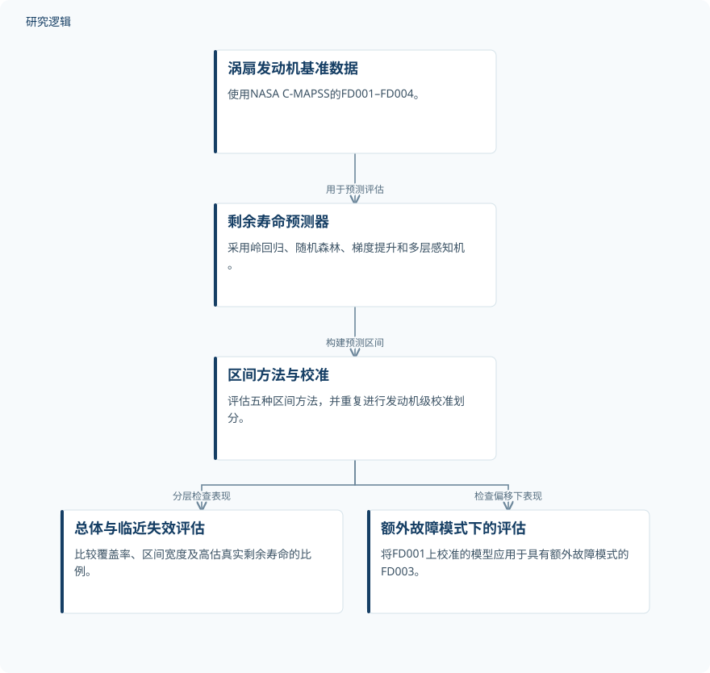

摘要解读
校准不等于安全：涡扇发动机寿命末期与工况偏移下的共形预测区间
Calibrated but not safe: Conformal prediction intervals for turbofan remaining useful life near end of life and under operating shift
解读更新 2026-11-10 09:51 · 依据公开摘要整理，未核验全文细节
发动机剩余寿命预测区间即使平均覆盖率达标，也未必能支持安全维护。这项研究追问：临近失效时，区间是否足够准确且有用；故障模式变化后，原有校准还能否成立？
文章目录
平均覆盖达标，不等于临近失效时可靠
保形预测将剩余寿命（RUL）的点预测转换为区间，但安全关键维护关心的不只是总体覆盖率。对即将失效的发动机，区间过宽可能缺乏决策价值；高估剩余寿命则意味着朝不安全的方向出错。机队与校准数据存在差异时，区间是否仍有效，也需要单独检验。
同时检查覆盖率、区间宽度与高估风险
研究使用NASA C-MAPSS涡扇发动机基准FD001–FD004，涉及707台测试发动机，基于岭回归、随机森林、梯度提升和多层感知机预测器评估五种区间方法，并重复进行发动机级校准划分。
评估既面向总体，也单独考察真实RUL不超过30个循环的临近失效发动机，指标包括覆盖率、区间宽度及高估真实RUL的比例。此外，研究将FD001上校准的模型用于具有额外故障模式的FD003，检查分布偏移下的表现。
依据摘要整理的寿命区间评估示意


仅概括摘要明确报告的数据、预测与区间评估关系，不代表论文原图或完整实验流程。
下载 SVG图示关系说明
实线表示相邻阶段的信息流，虚线表示跨阶段联系或反馈。
涡扇发动机基准数据 → 剩余寿命预测器：用于预测评估；剩余寿命预测器 → 区间方法与校准：构建预测区间；区间方法与校准 → 总体与临近失效评估：分层检查表现；区间方法与校准 → 额外故障模式下的评估：检查偏移下表现
区间变窄有条件，故障模式变化暴露风险
全局分割保形预测的平均覆盖率为89–92%，达到名义90%水平，也覆盖了几乎所有临近失效发动机；但区间宽度约44个循环，对于仅剩30个循环的对象并不够有用。真实剩余寿命为61–90个循环时，覆盖率仅为68–76%。
按预测RUL分段校准的Mondrian保形预测改善了树集成模型的临近失效区间：梯度提升的宽度从43.7降至20.7个循环，树集成模型仍保持96.5–97.8%的临近失效覆盖率；但岭回归对应覆盖率仅为77%。未经校准的分位数回归高估了20%的临近失效发动机寿命；保形化后虽恢复平均覆盖率，临近失效覆盖率仍可低至80%，且区间平均宽度超过90个循环。
从FD001转向具有额外故障模式的FD003时，临近失效覆盖率降至37–50%。偏移条件下，全部未覆盖情形中有95%属于高估剩余寿命。总体校准达标，不能替代对危险工况的单独检验。
摘要不能说明哪些部署边界
以上解读仅依据摘要。摘要未交代各子集及临近失效组的样本分配、重复划分次数、具体模型配置与完整比较细节，无法据此判断结果稳定性的全部来源。已报告的偏移验证涉及FD001到FD003，不能直接外推至其他偏移或真实机队，也不能认定区间已改善实际维护效果；这些信息未在摘要中报告，不等于论文没有研究。
阅读启发：把覆盖、宽度和错误方向一起看
阅读启发：评估智能运维中的寿命区间时，值得追问“覆盖了谁、区间多宽、错向哪里”，而非只看总体达标。进一步阅读可关注RUL分段如何设定、不同预测器为何表现不同，以及校准与应用数据的可交换性如何讨论。这些问题有助于理解适用边界，并不意味着分段校准已经解决部署安全问题。
以上为本站阅读启发与建议，不是论文已验证的结论。